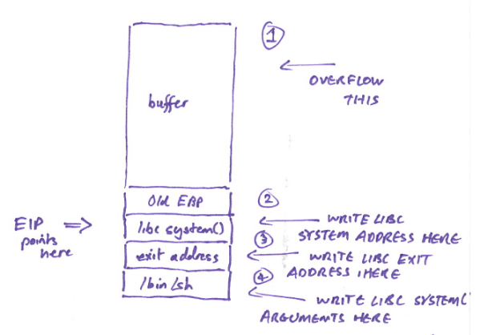

# Exploit Development - Linux - x86 - ret2libc
https://www.youtube.com/watch?v=eFzYISSiheMhttp://phrack.org/issues/58/4.html - advanced ret2libc
A ret2libc attack is where you overwrite the return address on the stack to point to a function in
libc, like
system().
ret2libc is a way of bypassing a Non-eXecutable -
NX - stack.
## What is libc?
libc is the C standard library -
https://en.wikipedia.org/wiki/C_standard_library - which provides a multitude of functions for basic tasks like handling strings, interacting with the OS, memory management etc.
Functions include:
printf() - to print text to stdout
system() - to execute system commands
libc is included in (basically) every C program. You'd be reinventing the wheel if you didn't use it.
A program that inlcudes
libc, when it starts executing, will load the contents of
libc into memory.
## ret2libc
In the context of exploit development, if for some reason we can't execute shellcode that we've dropped onto the stack (NX/DEP protection, for example), we can instead overwrite EIP and tell it to jump to a function in the
libc library and execute it. This is called a
ret2libc attack.
The easiest/most effective function to jump to in
libc is
system() - which executes system commands.
If we run
system("/bin/sh"), we can spawn a shell.
So, instead of writing and dropping shellcode onto the stack, we can simply jump to the address of
system() in
libc, write the argument of
/bin/sh onto the stack, and spawn a shell. The genius of ret2libc is that we're re-using code that already exists within
libc for our own exploitative purposes, not writing anything new.
When you overflow the buffer with the right values, here is how the ret2libc system() attack will look on the stack:
## The libc exit address
libc assumes that it's been called by a function/a caller.
This means that, when
system() exits, it will look for a return address on the stack and attempt to return to the function/caller that called it.
- If you don't care about the program crashing upon exit, you can put any 4 random bytes (AAAA) as the return address
- If you want the program to exit cleanly after being exploited/system() has run, then you should enter a valid address that the program can return to
## What binary protections can be bypassed using ret2libc?
ret2libc can be used to bypass:
• NX (non-executable stack) & DEP (data execution prevention)
• A restricted return address
• and probably lots more
things